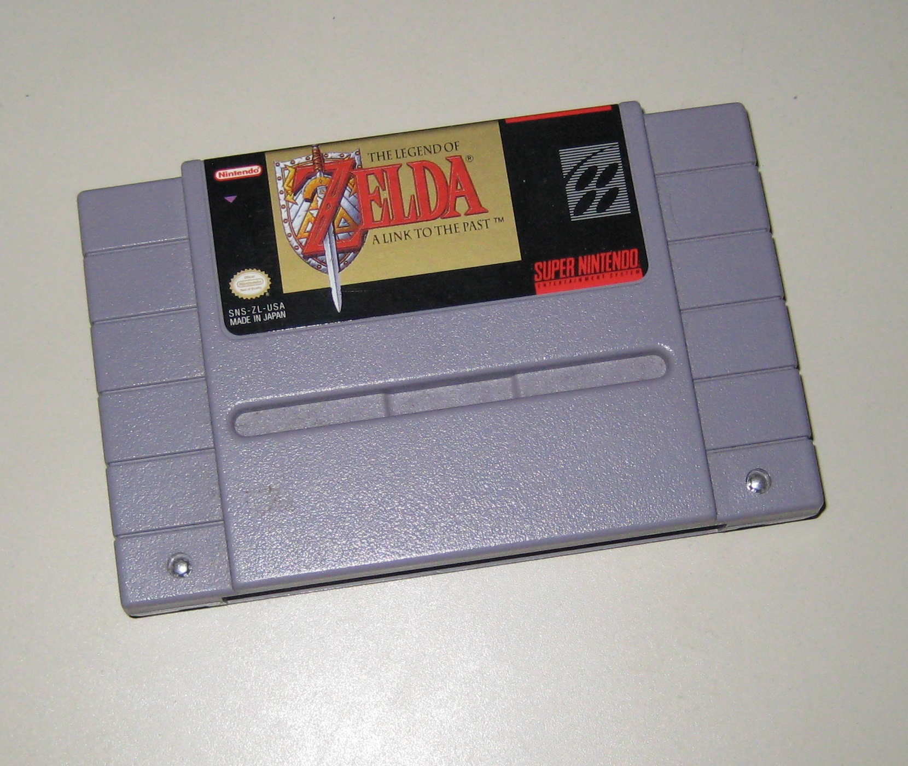

The Ledgend of Zelda - A Link to the Past
September 7th 2015
A Link to the Past is probably the second if not most famous game in The Ledged of Zelda series and rightfully so. Here I'll give my opinion on the game and describe what exactly makes this Super Nintendo classic so good.
Gameplay: In A Link to the Past you play as Link. Link is a young boy who is given the quest of freeing seven sages to save the world and defeat the evil Ganon. This is a typical story for this type of RPG but it is good enough for me and what's really important is the gameplay.
In the game Link must navigate the land of Hyrule to reach and overcome dungeons and the dungeon boss. The story progresses after beating each boss. There are also many fairly simple and straight forward side quests that help you in the dungeons and on your quest. Items you find in the dungeons and in the side quests can help you reach new parts of the overworld to reach new quests. Most of the side quests are very easy (destroy wall, get item), but some are a little more interesting such as a timed race through a maze.
A unique twist this game has over other RPGs is the ability to travel to the "Dark World". The Dark World is a parallel universe that can be reached using one of several portals hidden in the "Light World"/regular world. However, you can transport back to the Light World by using a magic mirror. You will need to go back and forth between these two worlds to reach certain destinations in either world. This is what makes A Link to the Past interesting and memorable.
Bosses: The first boss is easy but after that they get harder. Most people found the third boss extremely hard, but after playing the game I find it does not live up to the hype, but it is quite difficult. One thing I like about this game and most games in The Ledged of Zelda series is that the bosses are very unique and you will need to use different strategies to defeat each one.
If you are finding a boss too hard and have got some empty bottles via the side quests, why not get some fairies? Fairies are hidden throughout the game including dungeons and will restore your health once you die. You can carry up to four fairies at once and they can make a hard boss a lot easier. You could also buy one of many potions for your quest, but that can be expensive.
Music: The music and sound effects are great. The music is very similar to Ocarina of Time and the sound effects and very impressive for 16-bit.
Complaints: One problem I have with the game is that if you are still alive, you cannot save without exiting the game. It can be little anything because you might want to save after beating a dungeon and then have to go past the start screen. Or worst, forget saving and lose your progress (which I did at one point).
Conclusion: A Link to the Past is very simply one of the best RPGs on the Super Nintendo if not the best, and that is saying a lot considering the Super Nintendo library. It has been released on several modern consoles so why don't you pick it up and give it a try.